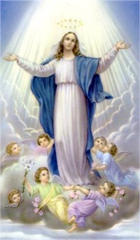
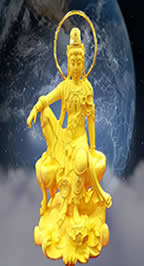
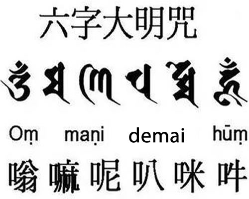

二，觀世音菩薩.......法门
什麼是觀音法門？就是要修出海潮音，修出摩尼珠。有很多人誤以為海潮音 就是到大海邊去聽海潮的聲音，其實不是的，大海邊的海潮音是色界中、欲界中的有形有相之音，而觀音法門中的海潮音是無形無相之音。
釋迦牟尼在兩千五百年前的這次轉世（這是他最後一次轉世），先是苦修六 年瑜伽。第七年在禪定中修出明星，即摩尼珠。然後入林中大定四十八天，出定 後獲大神通為眾人所服，故而再度開創佛教。他告訴世人，最好的修持方式就是 觀音法門。而觀音法門的密法就是一卷經，一卷經的密意就是瑜伽。

西洋人說念聖母就可升天，東方淨土宗說念觀音就可升天，到底是先有聖母 還是先有觀音，她兩的小名全叫妙善。
要獲得觀音的加持可就不那麼容易了，首先你必須具備菩提心，具備大悲心。否 則就不能與觀音相應。菩提心就是無我，但世人沒有一個能做到無我。就這一條， 就無法相應。
觀音普渡眾生，但並沒有放低得渡的標準。降低標準是世人自己搞的，觀音 不承認。你必須有無我之心、有大悲之心，觀音方會加持於你、引渡你。她不會 把自私自利的人渡到她的國度去污染那裏的環境。

觀音的職責主要是引渡，是把一切人引渡到修行者的行列來。她是教化眾 生，但不主持修行和加持。大勢至的重心是放在對西洋教的教化和修行加持上， 若是修行天主、基督等宗教，在修行中要與其保持相應。
觀世音菩薩的六字大明咒，幾乎是家喻戶曉的，它是：唵嘛呢叭咪吽，其中 嘛字要發“摩”的音，咪字要發一個組合音“得麥”。六字大明咒可寫成：唵摩 尼叭（得麥）吽，摩尼的字就是摩尼珠，那麼什麼是摩尼珠呢？能不能見到摩尼 珠呢？此摩尼珠人人都有，只要去修就能修出來，摩尼珠就是在你修持一定的時 候時，在你天目前所展現出的一個極亮的光團。如果你能修出摩尼珠，去西天就 不成問題了，如果修不出摩尼珠，去西天就成問題。
在古青潭的旁邊，有一古六字塔。此塔為聖觀音所創建。塔上六字，就是最著名的六字大明咒，即六字真言。觀音六字大明咒，就是從這裏傳出的。即是，此咒的發源地，就是古青潭，就是麗江地區。

崑崙八妖古族，與觀音的六字真言，交融成獨特的麗江古文化。 那麼，觀音法門是什麼？就是六字真言，即：必須把摩尼珠修出來。此即摩尼法門，或稱之為摩尼功法。
崑崙中華瑜伽系列功法，就是摩尼功法的具體體現，她的一切動作，招式都是為修出摩尼珠。崑崙中華的瑜伽關係，即"相應"關係就是密多。密是指宙心大日如來。多是指以觀音為首的九宮。密多包容天地間一切，包容萬有萬物萬種萬類。她不分宗教、不分門派、不分種族、不分出家與在家、不分佛與魔、不分神與鬼、不分仙與人、不分內道與外道……
在修行問題上：釋迦牟尼佛是總教主。觀世音菩薩是總壇主。大勢至菩薩是總渡師。文殊、即大日如來是法王、是眾佛之師、是眾佛之王。普賢菩薩是總修行導師。西王聖母是總管、是仙神之王。九天玄女，在佛門稱之為大黑天、是總護法。以上七位，是修行者應該了知的 。
送子觀音是不是觀音！筆者查了許多例，發現送子觀音都是動物仙類幻化的。它們想幫助人類，盡最大努力滿足人類的要求。是把小狐仙、小黃仙、小嫦仙、小蟒仙、小白仙等等送入人間。一方面滿足了凡人求子的渴求，一方面又幫修的較好的動物仙解決人身的問題。
記住！觀音不送子，送子非觀音！ 觀音為何不送子？因為送子與佛法是矛盾的。佛法曰：人生是苦！那麼，又為何將生靈投入苦海之中呢？
| 上 一 頁 | 下 一 頁 | 回 主 頁 |